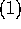
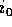
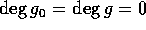
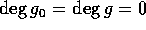
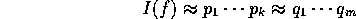

ここでは、R を一意分解整域、 を商体とする。
 。
。
 ならば、。
ならば、。
 の最小公倍元であるとは、以下の２条件を満たすことである。
の最小公倍元であるとは、以下の２条件を満たすことである。
 。
。
 は、互いに素 (coprime) であるという。
は、互いに素 (coprime) であるという。
 が互いに素である時、 を原始多項式 (primitive polynomial) という。
が互いに素である時、 を原始多項式 (primitive polynomial) という。
練習問題にもあるように、R が一意分解整域ならば最大公約元、最小公倍元は存在する。
、。m を  の最小公倍元、、d を の最大公約元、 とする。 は互いに素である。さらに、
の最小公倍元、、d を の最大公約元、 とする。 は互いに素である。さらに、
ここで、、 とおけばよい。
、 、
、 は、R 上の原始多項式、、、a と b、 と は互いに素な R の元とする。
だから、それぞれの係数の最大公約元を考えると、最大公約元は、正則元倍をのぞいて、一意に決まり、
は、R 上の原始多項式、、、a と b、 と は互いに素な R の元とする。
だから、それぞれの係数の最大公約元を考えると、最大公約元は、正則元倍をのぞいて、一意に決まり、 、
、 はともに原始多項式だから、 となる
はともに原始多項式だから、 となる  がある。従って、。
がある。従って、。
K の２元 について、 となる  が存在するとき、 と書く。このとき、 について、
が存在するとき、 と書く。このとき、 について、
 、 を原始多項式、
p は素元、とする。 のうち、p で割れない最小の i を  とする。また、 のうち、p で割れない最小の j を  とする。すると、
とする。すると、

 、 で、、 は原始多項式と書く。すると、 で、 は、
、 で、、 は原始多項式と書く。すると、 で、 は、 より、原始多項式だから、
より、原始多項式だから、 。
。
 が
が  の元として既約ならば、 の元として既約であることは明らか。
の元として既約ならば、 の元として既約であることは明らか。 において、
において、 、 とする。ここで、
、 とする。ここで、 、、 は原始多項式とすると、
、、 は原始多項式とすると、 、 より、。従って、 又は、。従って、
、 より、。従って、 又は、。従って、 においても既約である。
においても既約である。
である事に注意すると、かつ上の が素元であることは明か。
逆に  を素元とする。f = gh とすると、g, h のいずれかは、
を素元とする。f = gh とすると、g, h のいずれかは、 の元だから、 又は、同じことだが
の元だから、 又は、同じことだが  ならば、f は、R の素元である。
ならば、f は、R の素元である。 ならば、f は既約で、かつ より
ならば、f は既約で、かつ より  となり f は原始多項式。従って、この場合は、
となり f は原始多項式。従って、この場合は、 が成立する。
が成立する。
定理  の証明
だから、n = 1 の場合、すなわち、R が一意分解整域の時、
の証明
だから、n = 1 の場合、すなわち、R が一意分解整域の時、 が一意分解整域であることを示せばよい。
が一意分解整域であることを示せばよい。
が素元分解可能であることを に関する帰納法で示す。 の時は、R が一意分解整域であるから、補題  に注意すれば
に注意すれば  の素元に分解できることが分かる。 かつ可約の時は、f = gh、 と表すと、、 だから、帰納法の仮定により、g、h ともに素元分解できる。従って、f も素元分解できる。そこで既約とする。すると、
の素元に分解できることが分かる。 かつ可約の時は、f = gh、 と表すと、、 だから、帰納法の仮定により、g、h ともに素元分解できる。従って、f も素元分解できる。そこで既約とする。すると、 、 は原始多項式と書くと、
、 は原始多項式と書くと、 は既約でもあるから、補題
は既約でもあるから、補題  により素元、後は、 に R における素元分解を適用すれば
により素元、後は、 に R における素元分解を適用すれば  における素元分解が得られる。
における素元分解が得られる。
一意性：
を f の素元分解とし、
、 は次数が 1 以上の既約原始多項式とする。すると、、 は 補題  により、ともに原始多項式だから、
により、ともに原始多項式だから、

を得、ある によって、 と書けるから、R が一意分解整域であることより、この部分の一意性は得られる。一方、
 は、体上の多項式環だからユークリッド整域、とくに一意分解整域で に一意性を適用すると、適当に順番を入れ替えると、、 と書くことが出来る。 だから
は、体上の多項式環だからユークリッド整域、とくに一意分解整域で に一意性を適用すると、適当に順番を入れ替えると、、 と書くことが出来る。 だから  を得、
を得、 が原始多項式であることより、 を得る。従って、分解は一意的である。
が原始多項式であることより、 を得る。従って、分解は一意的である。